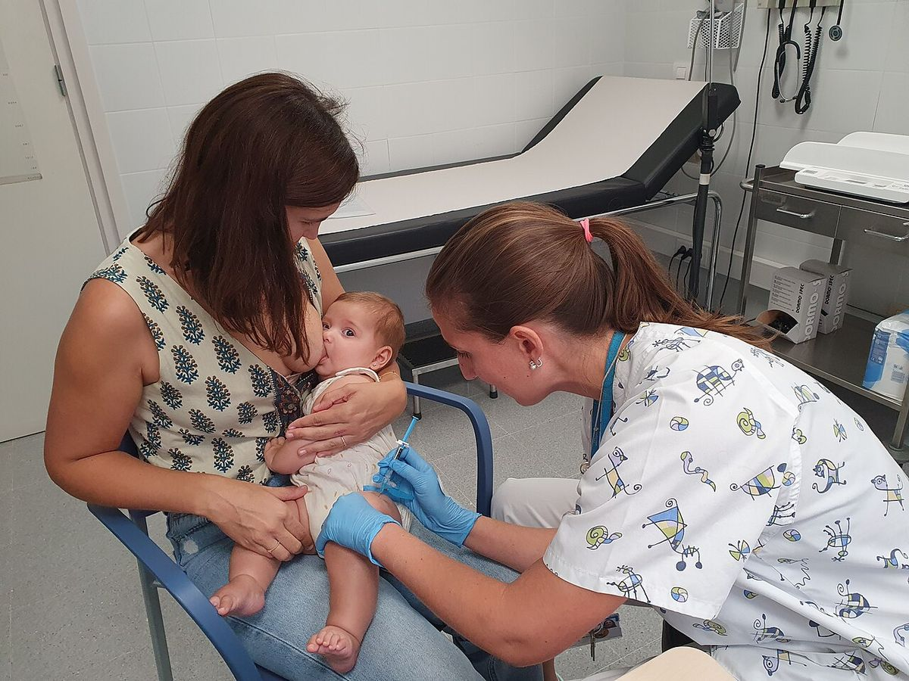

Lactancia materna
La Organización Mundial de la Salud recomienda la lactancia materna exclusiva durante los primeros 6 meses y mantenerla, junto con otros alimentos, hasta los 2 años o más. La mayoría de las dificultades del principio se resuelven con apoyo y una buena postura.
Revisado en noviembre de 2026 · Fuentes al final de la página

.jpg){kind=link}
Un buen comienzo
- Contacto piel con piel inmediato tras el parto y primera toma en la primera hora de vida.
- Lactancia a demanda: al principio suelen ser entre 8 y 12 tomas en 24 horas. Las señales de hambre (buscar, chuparse las manos) aparecen antes que el llanto.
- Evita chupetes y biberones en las primeras semanas, mientras la lactancia se establece, salvo indicación.
Señales de un buen agarre
- La boca muy abierta, con el labio inferior hacia fuera, abarcando buena parte de la areola, más por debajo que por arriba.
- La barbilla toca el pecho y la nariz queda libre.
- Mejillas redondas, no hundidas, y se oye tragar.
- La toma no duele. El dolor que continúa durante toda la toma indica un mal agarre.
¿Está comiendo lo suficiente?
| Señal | Lo esperable |
|---|---|
| Pañales mojados | 6 o más al día a partir del quinto día, con orina clara |
| Deposiciones | Amarillas a partir del cuarto o quinto día, varias al día en las primeras semanas |
| Peso | Pierde algo de peso los primeros días y recupera el del nacimiento hacia los 10–14 días |
Problemas frecuentes
- Grietas: casi siempre por mal agarre. Corrige la postura; unas gotas de leche sobre el pezón tras la toma ayudan a cicatrizar.
- Ingurgitación: pechos duros y tensos los primeros días. Tomas frecuentes, extraer un poco de leche para ablandar la areola antes de la toma y frío después.
- Mastitis: zona roja, caliente y dolorosa, a veces con fiebre. Seguir amamantando, frío local, antiinflamatorio y evitar masajes fuertes. Si no mejora en 24–48 horas o hay mucha fiebre, consulta: puede necesitar antibiótico.
Para saber si un medicamento es compatible con la lactancia, consulta e-lactancia.org, del Hospital de Denia (APILAM). La mayoría lo son.
Fuentes
- Organización Mundial de la Salud y UNICEF. Lactancia materna: recomendaciones y la iniciativa Hospital Amigo de los Niños (IHAN). www.who.int
- Mitchell KB y cols. Academy of Breastfeeding Medicine Clinical Protocol #36: The Mastitis Spectrum, Revised 2022. Breastfeed Med. 2022;17(5):360-376. doi.org
- Comité de Lactancia Materna de la Asociación Española de Pediatría. www.aeped.es
- APILAM. e-lactancia: compatibilidad de medicamentos y otros productos con la lactancia. www.e-lactancia.org